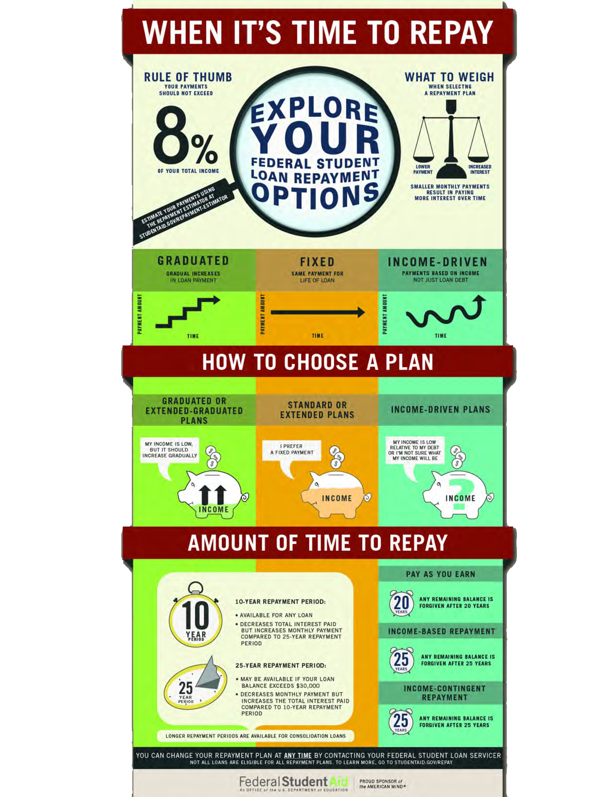

If you feel like you’re barely holding on or panic every time you realize you have a certain amount to pay towards your student loans, something’s not right. You should be comfortably paying off your student loans each month at a pace that’s working for you. If you’re not comfortable with the amount you’re paying each month, explore alternative payment options.
If you haven’t selected a specific repayment plan already, you were automatically put on the standard plan. Your loan servicer can help you choose a loan repayment plan that’s best for you. Before you contact your loan servicer to discuss repayment plans, use the Repayment Estimator to get an early look at what repayment plans you may be eligible for and to receive a comparison of estimated monthly payment amounts for all federal student loan repayment plans. This comparison is important because the Standard Plan may not provide you with the lowest payment amount based on your individual circumstances.
Here’s a more visual representation of the basic repayment options.

The reason you may want to pay more each month is if you want to save money on interest in the long run. If you want to pay your loans off quickly and can afford to do it, select the Standard Repayment Plan. Unless you consolidate, your loans will be paid off after 10 years of payments.
This repayment plan saves you money over time because your monthly payments may be slightly higher than payments made under other plans, but you’ll pay off your loan in the shortest time. For this reason, you will pay the least amount of interest over the life of your loan.
The following loans from the Direct Loan Program and the FFEL Program are eligible for the Standard Repayment Plan:
Under this plan, your monthly payments are a fixed amount of at least $50 each month and made for up to 10 years for all loan types except Direct Consolidation Loans and FFEL Consolidation Loans.
If you have a Direct Consolidation Loan or FFEL Consolidation Loan, the length of your repayment period will depend on the amount of your total education loan indebtedness. This total education loan indebtedness includes the amount of your consolidation loan and your other student loan debt. Other student loan debt includes any federal student loans that are not included in the consolidation loan, as well as private education loans that are not eligible for consolidation.
The maximum amount of other student loan debt that may be considered in determining your repayment period may not exceed the loan amount you are consolidating.
To include other student loan debt in the determination of the repayment period for your Direct Consolidation Loan, be sure to list those loans on your consolidation application in the section for listing loans that you do not want to consolidate, but want considered in the determination of your repayment period.
The chart below shows the maximum repayment period for a Direct Consolidation Loan or FFEL Consolidation Loan under the Standard Repayment Plan depending on total education loan indebtedness.
| If your Total Education Loan Indebtedness is… | …your Repayment Period will be… | |
|---|---|---|
| At Least | Less Than | |
| $7,500 | 10 years | |
| $ 7,500 | $10,000 | 12 years |
| $10,000 | $20,000 | 15 years |
| $20,000 | $40,000 | 20 years |
| $40,000 | $60,000 | 25 years |
| $60,000 | 30 years | |
If your income is low now, but you expect it to increase steadily over time, this plan may be right for you.
The following loans from the William D. Ford Federal Direct Loan (Direct Loan) Program and the Federal Family Education Loan (FFEL) Program are eligible for the Graduated Repayment Plan:
Under this plan, your monthly payments
Under this plan, your monthly payments
If you have a Direct Consolidation Loan or FFEL Consolidation Loan, the length of your repayment period will depend on the amount of your total education loan indebtedness. This total education loan indebtedness includes the amount of your consolidation loan and your other student loan debt. Other student loan debt includes any federal student loans that are not included in the consolidation loan, as well as private education loans that are not eligible for consolidation. The maximum amount of other student loan debt that may be considered in determining your repayment period may not exceed the loan amount you are consolidating.
To include other student loan debt in the determination of the repayment period for your Direct Consolidation Loan, be sure to list those loans on your consolidation application in the section for listing loans that you do not want to consolidate, but want considered in the determination of your repayment period.
The chart below shows the maximum repayment period for a Direct Consolidation Loan or FFEL Consolidation Loan under the Graduated Repayment Plan depending on total education loan indebtedness.
| If your Total Education Loan Indebtedness is… | …your Repayment Period will be… | |
|---|---|---|
| At Least | Less Than | |
| $7,500 | 10 years | |
| $ 7,500 | $10,000 | 12 years |
| $10,000 | $20,000 | 15 years |
| $20,000 | $40,000 | 20 years |
| $40,000 | $60,000 | 25 years |
| $60,000 | 30 years | |
If you want to have the lowest monthly payment or can’t afford to make payments under the Standard Repayment Plan, check out income driven repayment. When you set your payment at a percentage of your income, you will usually have a lower monthly payment than other plans, and can have payments as low as $0 per month. With these plans, you’ll be in repayment for up to 20 or 25 years. If your loans are not repaid in full after 20 or 25 years, the remaining balance will be forgiven.
An income-driven repayment plan is a repayment plan that sets your monthly student loan payment at an amount that is intended to be affordable based on your income and family size. The U.S. Department of Education offers four income-driven repayment plans: Revised Pay As You Earn Repayment Plan (REPAYE Plan), Pay As You Earn Repayment Plan (PAYE Plan), Income-Based Repayment Plan (IBR Plan), and Income-Contingent Repayment Plan (ICR Plan). Most federal student loans are eligible for at least one income-driven repayment plan.
| Repeyment Plan | Payment Amount |
|---|---|
| REPAYE Plan | Generally 10 percent of your discretionary income |
| PAYE Plan | Generally 10 percent of your discretionary income, but never more than the 10-year Standart Repayment Plan amount |
| IBR Plan |
Generally 10 percent of your discretionary income if you are a new borrower on or after July 1, 2014*, but never more than the 10-years Standart Repayment Plan amount Generally 15 percent of your discretionary income if you are not a new borrower on or after July 1, 2014*, but never more than the 10-years Standart Repayment Plan amount |
| ICR Plan |
The lesser of the following:
|
TIP: You never have to pay someone an up-front or monthly fee to enroll in these plans. Student loan debt relief scams can cost you thousands of dollars and drive you further into debt.
Some of you may be familiar with the Pay As You Earn (PAYE) Repayment Plan, which caps payments at 10% of a borrower’s monthly income and forgives any remaining balance on your student loans after 20 years of qualifying repayment. But this plan is only for recent borrowers.
REPAYE solves this problem. Like the name implies, REPAYE has some similarities to PAYE. First and foremost, REPAYE, like PAYE, sets payments at no more than 10% of income. However, REPAYE—unlike PAYE— is available to Direct Loan borrowers regardless of when they took out their loans.
If you can’t afford your monthly payment under your current repayment plan, you should consider REPAYE or one of the other income-driven repayment plans. These plans can offer needed relief by ensuring that you will never pay more than a certain percentage of your income. If you can afford to pay more on your loan, you should, since this will save you more on interest costs over the life of your loan.
If you’re pursuing Public Service Loan Forgiveness, you should consider REPAYE. REPAYE is an eligible repayment plan for the Public Service Loan Forgiveness (PSLF) Program. If you’re working toward PSLF and considering consolidating your loans in order to qualify for REPAYE, you should read this first.
If you’re currently on Income-Based Repayment (IBR) because you weren’t eligible for PAYE, you should consider whether REPAYE might be a better option for you. REPAYE could lower your payments by one-third, from 15% to 10% of income.
Under any income-driven repayment plan, you’ll need to “recertify” your income and family size each year.
So, you already know that your payment under an income-driven plan is a percentage of your income. But REPAYE is different from the other plans. Here are a few differences: There’s no income requirement to enter the plan: Unlike with the PAYE and IBR plans, borrowers don’t have to show that that their income is low compared to their federal student loan debt in order to enter REPAYE. In simple terms, that means that the amount of your debt and your income level won’t keep you from qualifying.
Borrowers with only undergraduate loans will have a different repayment period than those with graduate loans: Income-driven repayment plans forgive any remaining loan balance after a specific number of years of qualifying repayment—either 20 or 25 years, depending on the plan. REPAYE is a little different than the other income-driven repayment plans. With REPAYE, if you’re only repaying loans you received as an undergraduate student, you’ll repay your loans for up to 20 years. However, if you’re repaying even one loan that you received as a graduate or professional student, you’ll repay your loans (including any loans you received as an undergraduate) for up to 25 years. Of course, this difference doesn’t matter if you later qualify for Public Service Loan Forgiveness, since your loans would be forgiven after 10 years of qualifying payments.
Married borrowers’ payments are calculated differently: The other income-driven repayment plans use the combined income of you and your spouse to set your payment amount only if you file a joint federal income tax return. If you and your spouse file separate tax returns, your payment amount is based on only your income. REPAYE (with limited exceptions) uses the combined income of you and your spouse to set your monthly payment amount, regardless of whether you file a joint tax return or separate returns. This could increase your monthly payment amount. For more information, read our Q&A.
REPAYE payments are not capped at the 10-year standard payment amount: Generally, your payment amount under an income-driven repayment plan is a percentage of your discretionary income. However, this isn’t always the case with the PAYE and IBR plans. Under PAYE and IBR, your payment will never be higher than what it would have been under the 10-year Standard Repayment Plan, no matter how much your income increases. With REPAYE, there’s no cap on your monthly payment amount. Your payment will always be 10% of your discretionary income, no matter how high your income grows. This means that if your income increases significantly, your REPAYE payment could be higher than what you would have to pay under the 10-year Standard Repayment Plan.
REPAYE provides a more generous interest benefit: If your payment doesn’t cover all of your interest, REPAYE pays more of the remaining interest than PAYE or IBR. This can help prevent your loan balance from ballooning and limit the total cost of your loans.
Determine whether you have Direct Loans before attempting to switch to REPAYE. If you’re not sure which type of loans you have, you can log in to StudentAid.gov to find out. Loans labeled “Direct” qualify for REPAYE, loans without the “Direct” label don’t qualify for REPAYE unless you consolidate them. You can apply for a Direct Consolidation Loan on StudentLoans.gov. Special considerations for borrowers who are currently on IBR:
You can apply for REPAYE — or any other income-driven repayment plan—on StudentLoans.gov. We’ve made some improvements to the way the electronic application works, so give it a spin.
Looking for the lowest monthly payment? With four income-driven repayment plans, it’s easy to overlook a plan or confuse a feature of one plan with another. Let us do the hard part for you. If you’re looking for the lowest monthly payment, there’s a box you can check on the application to request that your loan servicer evaluate you for all income-driven repayment plans, and put you on the plan with the lowest initial payment.